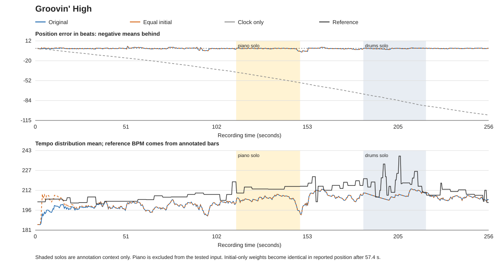
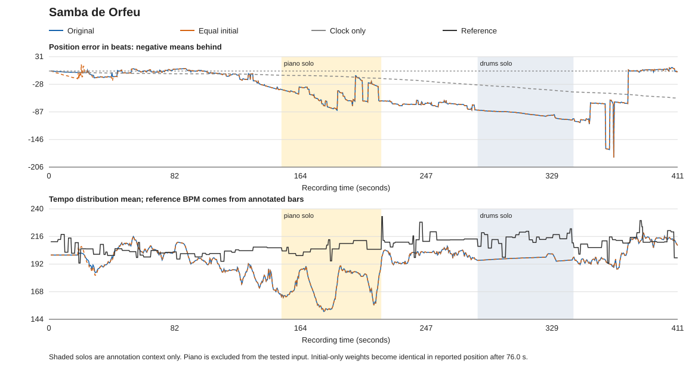

Scope: 26 simultaneous-band preferred takes, using the original bass-and-horn MIDI transcriptions. Overdubbed recordings are excluded. This is Maezawa-inspired chord matching inside our own position–tempo filter, a first step toward a baseline. A neural beat/downbeat tracker is not included.
The primary comparison changes only initial probabilities: 11.11% per tempo instead of a Gaussian preference around metadata BPM. The nine tempo values, chord matching, transition rule and 200-ms updates stay fixed. Ten pieces improve, fourteen worsen and two are unchanged. Probabilities are free to change after initialization.
| Setting | Correct bar | Within two beats | Mean absolute error (beats) |
|---|---|---|---|
| Original: Gaussian initialization and dynamics | 54.11% | 60.41% | 15.59 |
| Equal initialization only | 53.98% | 60.29% | 15.60 |
| Equal dynamics only | 52.63% | 59.22% | 18.15 |
| Equal initialization and dynamics | 52.32% | 58.94% | 18.18 |
| Same original filter, without harmony | 7.45% | 7.95% | 52.76 |
| Constant metadata-tempo clock | 7.72% | 8.54% | 52.72 |
Equal dynamics is a separate sensitivity: it changes the ongoing tempo-transition acceptance rule, including directional preference and effective mobility. It still permits tempo changes. All variants retain the 0.7–1.3× metadata tempo range and a known synchronized start. Metrics average pieces equally.
| Piece | Original correct bar | Equal initial correct bar | Original mean error |
|---|---|---|---|
| Groovin' High | 86.81% | 86.11% | 0.66 beats |
| Samba de Orfeu | 12.88% | 10.63% | 44.04 beats |
These are the best and worst original cases, selected before the equal-weight runs. They are explanatory examples, not representative samples.
Metadata is 185 BPM; reference bar-derived tempo is approximately 210 BPM overall. Original tracking reaches 86.81% correct bars and 0.66-beat mean absolute error; the constant clock has about 48.74-beat mean error. The follower increasingly supports faster tempo candidates. A short error entering the bass solo is followed by recovery. During the drum solo it maintains 89.3% correct bars despite only 21.5% pitched-input coverage.

Metadata is 200 BPM, close to the overall reference of about 208 BPM and within the supported range. Nevertheless, original mean error reaches 44.04 beats, worse than the clock’s 21.26 beats. From about 106 to 378.4 seconds it remains more than four beats wrong.
During the piano solo (152–217 s), piano is absent from the tested input; bass dominates, and 97.8% of active snapshots tie several chord templates. Mean posterior tempo is about 173 BPM versus 206 BPM reference. During the drum solo (280–343 s), only 8.6% of snapshots contain pitched evidence; the already incorrect state persists. These associations identify failure conditions, not a controlled proof of one cause.
At 120 s, bass and trumpet both play G while the annotation is D minor 7. The binary D-minor template scores zero while several templates containing G score two. This is an evidence mismatch; listening or cleaner MIDI is needed to determine whether it reflects improvisation, transcription error or annotation timing.

Equal initialization produces exactly the same reported positions after 76 s, so it does not repair the later sustained failure. Repeated harmony leaves many locations plausible; the error is not simply a persistent wrong-chorus lock. Late abrupt corrections are switches between surviving position modes.
Reference positions interpolate within annotated bars; reference BPM is evaluation-only, not independent beat annotations. The known performance plan is unfolded from annotation bar/fraction coordinates. No unknown starts, unplanned repeats/skips, latency or human interaction are tested. Native piano and alternate sync annotations now exist locally but are excluded to preserve the original comparison. The results do not establish performance of Maezawa’s complete system or prove adaptive weighting will solve the failures.
Verification: all 26 original traces reproduced exactly; equal initial weights checked; all saved tempo probabilities finite and normalized; original files unchanged.
Advisor bullets · All per-piece results · Paired changes · Section diagnostics · Summary and checks